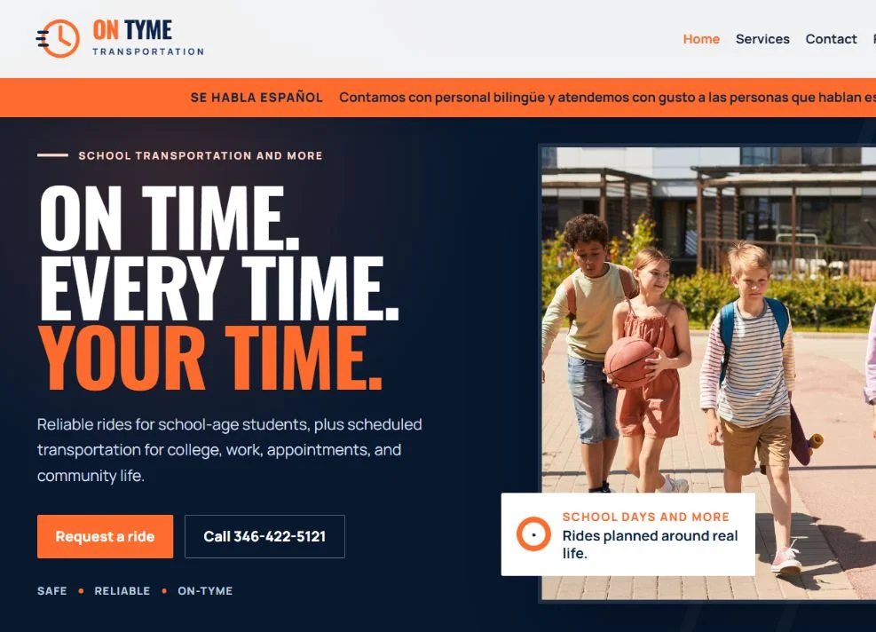
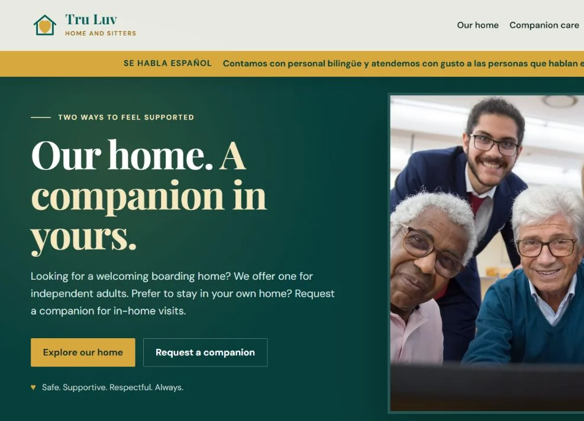
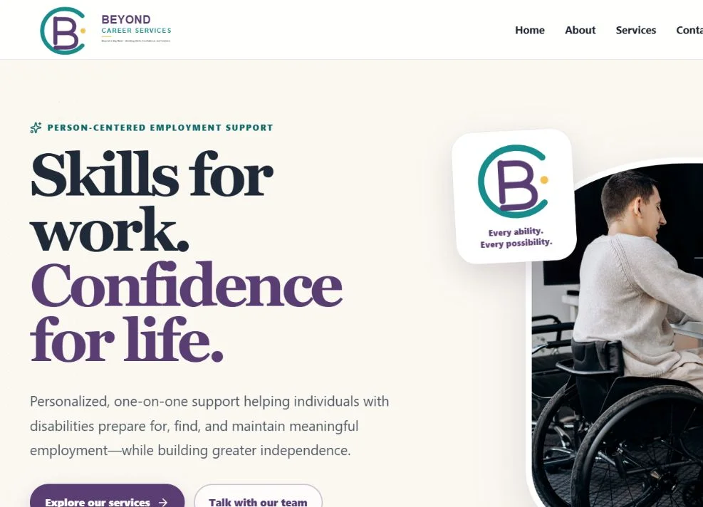

BUILD + RUN / COMMUNITY
A useful home for community information.
Kenswick Meadows / KMCA
Website design and ongoing support for resident information, forms and association documents.
WEB DESIGN FOR BUSINESSES & ORGANIZATIONS
WEB · CREATIVE · SUPPORTWe design websites that make it easy to understand what you do and get in touch. We work with businesses and organizations in the US and abroad.
You’ll work with Harry. We’ll agree on the work and price before you commit.
Selected projects
Take a look at the websites and creative work below. Each project explains what the client needed and what we did.
BUILD + RUN / COMMUNITY
Kenswick Meadows / KMCA
Website design and ongoing support for resident information, forms and association documents.
BUILD / NONPROFIT
Dale Ray / Gaining Ground Youth Services
A nonprofit website bringing together services, videos and the founder’s story.
GROW / RETAIL CREATIVE
Dreamhouse Furniture & Appliances
Promotional artwork and product content for a furniture and appliance retailer.
Client feedback
Trustworthy, dependable and capable. Harry takes ownership, follows through and delivers practical technology solutions that make the work easier.
KMCA
Review highlightCondensed from client feedback published in Harry’s portfolio. Read more client feedback ↓
Web design first. Support when you need it.
Start with what you need today. We’ll scope the work, explain the cost and explain what we need from you.
A business you’re proud of deserves a website you’re proud to share.
Get the message right. Make the next step obvious. Help people find their way to you.
The less time you spend fighting your tools, the more time you have for your customers.
Website + SZARA Care
Up to 5 pages · $999 setup + $149/month · 12 month initial agreement.
$2,787 initial term before taxes and approved extras. Other services quoted separately.
More selected work
More selected work / service businesses & creative
GROW / STORYTELLINGBook promotion artwork and storytelling, featured in the creative portfolio.

Visit ON TYME Transportation ↗Website design for a transportation business. Service sections separate school, college and adult rides, with a ride enquiry route and payment information.

Visit Tru Luv Homes ↗Website design that separates residential accommodation from visits by companions. Visitors can compare the two services and choose the right enquiry route.

Visit Beyond Career Services ↗Website design for an employment support business. The pages explain career planning, workplace skills and continued support, with a clear route to contact the team.
Checks availability, response time, certificates and form presence. Public demo uses fictional businesses and sample data.
RUN / DEMOA support operations portfolio demo with approved answers, ticket ownership and human handoff. Synthetic data.
Explore the case studies: Kenswick Meadows website and support · Gaining Ground nonprofit website.
Want to see more? Explore Harry’s full portfolio ↗
More client feedback
Creative, reliable digital support across promotions, social content and everyday business needs, with real ownership from idea through delivery.
Dreamhouse
Review highlightThoughtful, organized support that brought an important life story, services and community work together with clarity and care.
Gaining Ground Youth Services
Review highlightHonest, patient and dedicated. Harry takes initiative, offers ideas and finds practical ways to make systems more organized, reliable and user friendly.
Combination K.E.A.
Review highlightThese highlights are condensed from client feedback and written recommendations published in Harry’s portfolio.
Independent perspectives
You can read client feedback above and visit the sites we’ve worked on. Links to independent review profiles will be added here when they’re available.
Client experiences with SZARA.
Profile not yet publishedThe person behind SZARA
I’m Harry, the person behind SZARA. I’ll be your contact from the first conversation through launch.
I design websites, create promotional content and help clients look after the tools they use every day. You can see examples of that work above.
I’ll talk through your ideas, agree on a price and keep you updated as the work takes shape.
Explore Harry’s full portfolio ↗Explore web design, nonprofit websites and website maintenance.
Start with one thing
Starting fresh or replacing a website that no longer fits? Tell us what your business does and what customers need to do on your site.